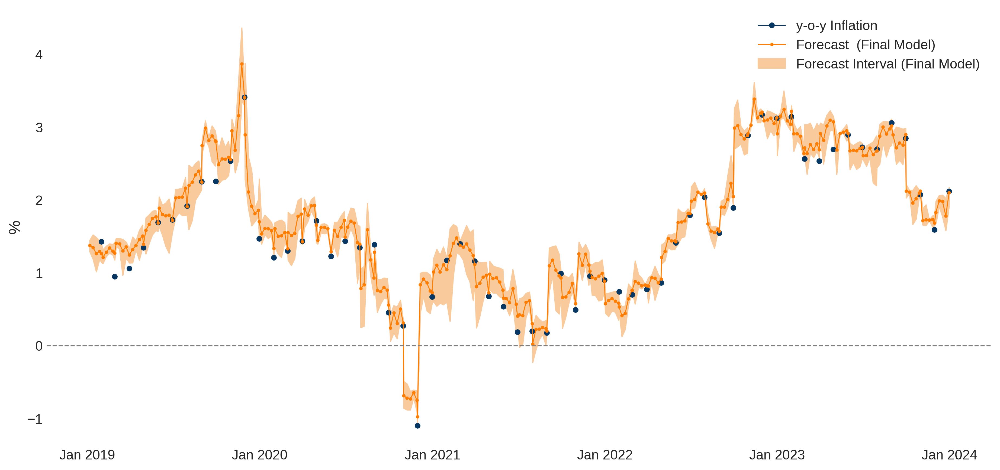
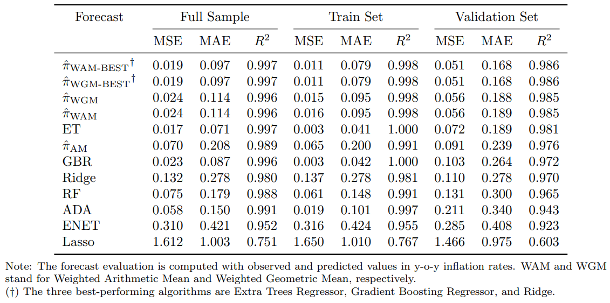
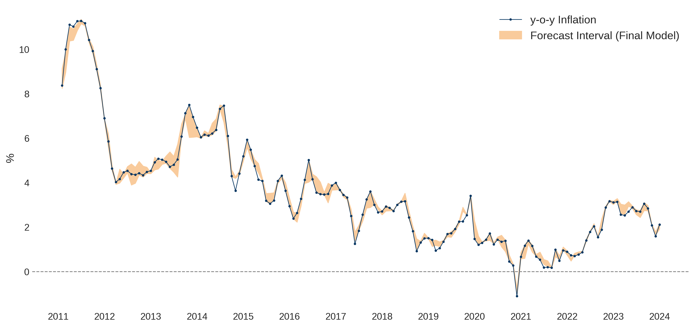
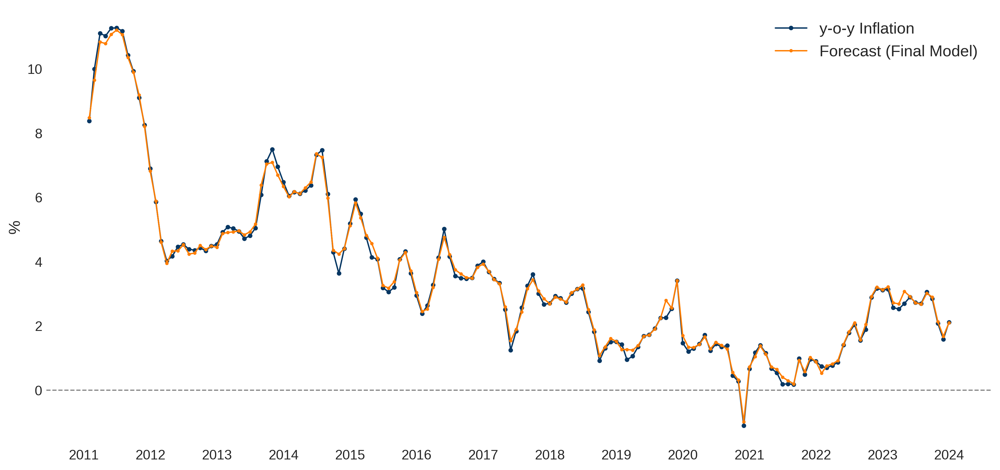
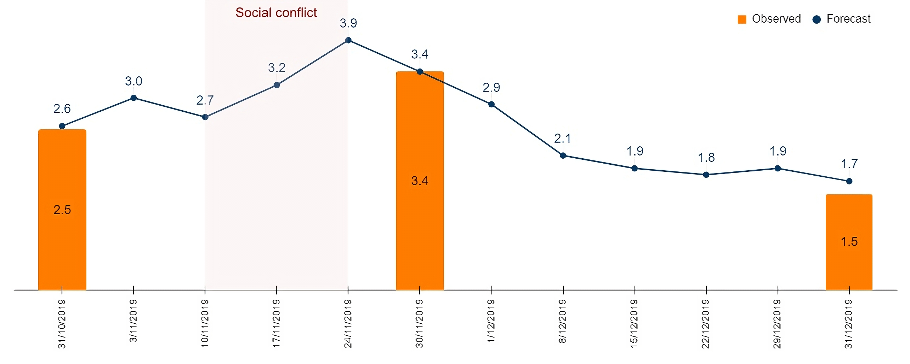
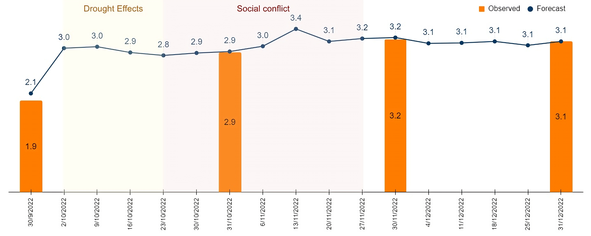

Forecasting Weekly Inflation with Machine Learning
Forecasting Weekly Inflation with Machine Learning

Inflation forecasting is a critical aspect of economic policy and financial planning. Accurate predictions enable policymakers to take preemptive measures, businesses to plan effectively, and investors to make informed decisions. Traditional models, while useful, often fall short in capturing the complex dynamics of inflation, particularly at high frequencies such as weekly intervals.
In this blog post, I introduce a novel approach to forecasting weekly inflation rates using a two-step machine learning methodology. This research aims to enhance the precision and timeliness of inflation forecasts, providing valuable insights for both economists and practitioners. For a comprehensive understanding of the methodology and results, readers are encouraged to refer to the full working paper: Weekly Inflation Forecasting: A Two-Step Machine Learning Methodology
Methodological Framework
This study proposes a two-step methodology for weekly forecasting, leveraging machine learning algorithms initially trained on monthly data and then applied to weekly data for higher frequency forecasting. The dataset \(\mathcal{D}\) includes daily, weekly, and monthly observations, with the target variable \(Y\) and features \(X\) derived from averages of high-frequency data.
Step 1: Monthly Inflation Forecasting
High-frequency data is aggregated into monthly averages to align with the frequency of the target variable. The aggregated feature \(x_{i,m}\) for month \(m\) is calculated as:
\[ x_{i,m} = \frac{1}{N_m} \sum_{t \in M} x_{i,t}^{d} \]
where \(N_m\) is the number of days in month \(m\), and \(M\) is the set of all days within that month. The target variable \(Y_m\) is computed similarly. A machine learning algorithm is then trained on the aggregated dataset \(\mathcal{D}_m = \{(X_m, Y_m)\}\).
Step 2: Applying Monthly-Validated Algorithms for Weekly Prediction
For weekly predictions, the monthly-trained algorithm is used, adjusting inputs by calculating weekly averages of daily data:
\[ x_{i,w} = \frac{1}{N_w} \sum_{t \in W} x_{i,t}^{d} \]
where \(x_{i,w}\) is the weekly average of feature \(i\), \(N_w\) the number of days in week \(w\), and \(W\) the set of all days within that week.
The assumption underlying this approach is that the data distribution remains consistent across time frequencies, ensuring that the algorithm captures patterns applicable across varying time scales:
\[ \mathbb{E}[Y_w] \approx \mathbb{E}[Y_m], \text{ given } \mathbb{E}[x_{i,w}] \approx \mathbb{E}[x_{i,m}] \]
This ensures that the expected values of weekly and monthly target variables are closely aligned.
Target Variable
This research employs a two-step methodology to forecast weekly inflation, with a particular focus on developing economies where access to high-frequency data is limited. Bolivia serves as the case study, representing a scenario where the most detailed publicly available data is monthly inflation statistics. This poses a unique challenge for predicting inflation due to the absence of high-frequency financial and stock market data commonly accessible in more developed economies.
The Consumer Price Index (CPI) is identified as the target variable (\(Y_m\)) due to its substantial correlation with the selected features, which enhances the forecasting capabilities of the machine learning algorithms deployed for predicting weekly inflation rates.
The CPI data facilitates step 1 of the two-step methodology for weekly forecasting, encompassing the training and validation of algorithms for monthly inflation forecasting, with the time series spanning from January 2011 to December 2023.
Features
This section outlines the assembly of a diverse dataset, poised for the two-step methodology aimed at forecasting weekly inflation. The dataset is segmented into five groups: wholesale prices, Google Trends data, financial variables, commodity prices, and lags. This categorization enables a holistic analysis that melds global economic insights with localized market conditions and the intricate dynamics of inflation.
The data compilation process is designed to facilitate the construction of time-series across daily, weekly, and monthly intervals, potentially serving as features within the forecasting methodology:
- Wholesale Prices: Incorporates wholesale price data from Bolivia’s Agro-Environmental and Productive Observatory (OAP), offering insights into market supply and demand dynamics. The dataset includes monthly (\(x_{i,m}^{\text{WS}}\)) and weekly (\(x_{i,w}^{\text{WS}}\)) averages derived from daily observations across various products.
- Google Trends Data: Captures shifts in consumer sentiment towards economic indicators and commodities. Weekly (\(x_{i,w}^{\text{GT}}\)) and monthly (\(x_{i,m}^{\text{GT}}\)) time series are compiled, with a transformation applied to weekly data to align with monthly aggregates.
- Financial Variables: Includes the Housing Development Unit (UFV) and the USD/BOB exchange rate, which serve as potential predictors of inflation. Despite Bolivia’s fixed exchange rate regime, the USD/BOB rate from Google Finance offers variability suitable for forecasting purposes. The dataset also includes the LIBOR rate due to its significant correlation with Bolivia’s CPI.
- Commodity Prices: Traces global economic influences on domestic inflation through a broad array of goods, allowing the model to account for external shocks and supply chain dynamics.
- Lags: To capture seasonality and persistence within inflation trends, lags of the CPI variable (1, 2, 3, 6, 9, and 12 months) are included as potential predictors.
Following the compilation of over 500 high-frequency potential predictors, a correlation analysis filters variables based on their relationship with the CPI, adhering to a threshold for positive correlation greater than 0.5. This rigorous selection criteria narrows down the feature matrix \(X\) to a total of 86 variables, optimized for the forecasting model.
Training, Validation, and Test Sets
Step 1 of the methodology leverages the monthly-frequency feature matrix \(X_m\) and the target variable \(Y_m\) as inputs, denoted as \(\mathcal{D}_m = \{(X_m, Y_m)\}\). This dataset forms the basis for training and validating machine learning algorithms with the goal of accurately forecasting monthly inflation rates. The dataset is partitioned such that 80% is designated for training, and the remaining 20% for validation.
This subdivision strategy opts for a random assignment of observations to training and validation sets, informed by the dataset’s feature composition and the inclusion of CPI lags, ensuring that the models are trained and validated against a broad spectrum of inflationary dynamics encapsulating the entire analysis period.
Proceeding to step 2 of the methodology, the algorithms, trained and validated on the monthly data (\(\mathcal{D}_m\)), are applied to a weekly-frequency feature matrix (\(X_w\)), positioning \(X_w\) as the test set for generating weekly forecasts of the target variable \(Y_w\).
Prior to analysis, both \(\mathcal{D}_m\) and \(X_w\) are subjected to z-score normalization to ensure uniformity across variables and minimize potential biases.
Machine Learning Algorithms
The machine learning algorithms selected include Ridge Regression, Lasso Regression, ElasticNet, AdaBoost Regressor, Gradient Boosting Regressor, Random Forest Regression, and Extra Trees Regressor. These algorithms are optimized through hyperparameter tuning using a 5-fold cross-validation technique to ensure robust performance on unseen data.
Aggregated Metrics for Forecasting
Aggregated forecast metrics are constructed to enhance overall forecasting performance by combining the heterogeneity and variability of individual predictions. This approach includes computing arithmetic and weighted means of individual predictions, as well as other aggregated metrics, to leverage the strengths of different algorithms.
Results
Monthly Inflation Forecasting
The methodology commenced with training and validating seven machine learning algorithms to forecast monthly inflation in Bolivia (Step 1). Each model underwent 5-fold cross-validation, evaluated using mean squared error (MSE), mean absolute error (MAE), and the \(R^2\). Hyperparameter tuning significantly enhanced all models, underscoring the importance of optimal parameter selection.
Table 1 displays the performance of individual algorithms and aggregated forecast metrics. At individual level, the Extra Trees (ET) algorithm emerged as the most accurate, followed by Gradient Boosting Regressor (GBR) and Ridge. Ensemble methods, particularly the weighted arithmetic mean of the three best-performing algorithms (\(\hat{\pi}_{\text{WAM-BEST}}\)), achieved the highest accuracy.

Figures 2 and 3 illustrate the forecast interval (The upper and lower limits are determined by the maximum and minimum values from the forecasts generated by the three best-performing algorithms.) and final model to forecast y-o-y inflation (The final model is the weighted arithmetic mean of the three best-performing algorithms (\(\hat{\pi}_{\text{WAM-BEST}}\)). The final model accurately captured significant inflation fluctuations, achieving a MSE of 0.051, MAE of 0.168, and \(R^2\) of 0.986 on the validation set.


Comparative analysis with similar studies reveals that the proposed final model’s performance is among the best, with notably low MSE and MAE values. It effectively surpasses traditional econometric approaches and survey-based forecasting methods. For greater detail on robustness and predictive capability, refer to the Working Paper.
Weekly Inflation Forecasting
Step 1 of the methodology established the final forecast model as the weighted arithmetic mean of the three best-performing algorithms. This model was applied to forecast weekly inflation from the first week of 2019 to the last week of 2023 (See Figue 1). The weekly forecasts align well with broader monthly trends, capturing within-month variations and providing early signals of inflationary shifts, crucial for economic policymaking.
The advantages of weekly over monthly forecasts are significant:
- Timeliness: Weekly data provides more immediate insights for quick economic responses.
- Detail: Within-month fluctuations reveal transient economic shocks that monthly data may miss.
- Predictive Accuracy: A better understanding of inflation dynamics enhances economic decision-making.
The model supports one-month-ahead forecasts, allowing policymakers to adapt strategies proactively. For instance, an unexpected weekly rise in inflation could prompt immediate measures before monthly data confirms the trend.
Moreover, validation using the two-sample Smirnov test confirmed that distributions of weekly predicted inflation are statistically indistinguishable from observed monthly inflation, supporting the model’s reliability.
Additionally, the model effectively captured inflationary impacts during significant events, such as the political crisis in November 2019 and the drought and civil strike in late 2022, demonstrating its value for real-time economic analysis.


Conclusion
This research demonstrates the efficacy of a two-step machine learning methodology in forecasting weekly inflation rates. This method delivers robust performance in both monthly and weekly forecasts. The approach is particularly valuable for developing economies with limited access to high-frequency financial data, providing a reliable tool for policymakers and economic planners.
For a detailed examination of the methodology, dataset, and results, refer to the full working paper: Weekly Inflation Forecasting: A Two-Step Machine Learning Methodology.